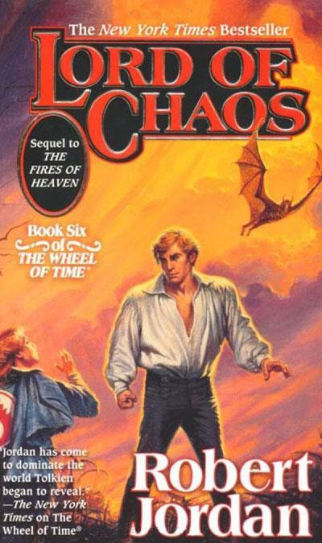

Lord of Chaos
⭐️⭐️⭐️
Format: audio (41 hours 32 minutes)
I liked this one better than the fifth, but not as much as the fourth. It's filled with some really cool moments (which obviously wouldn't be anywhere nearly as rewarding without reading all the previous books). It has a moment in it, which I know for any first-time reader, will completely surprise you. Jordan continues to do a fantastic job.
We get introduced to the title of Asha'man. I continue to be leary of Mazrim Taim - he gives me the creeps, which I imagine he's supposed to. I didn't like the fact that the Asha'man didn't stop slaughtering the Shaido until _he_ said something. The Shaido are annoying and I'm intrigued by this cube thing that Sevanna, but it makes my hackles rise as well. I love the concept of Rand hopping all over the place with gateways and feel bad for him being bonded by Alanna, only because it was without permission. My favorite pieces of the book are things I can't mention without spoiling some rather significant elements. Nynaeve healing gentling/stilling is awesome. I'm excited for Egwene becoming Amyrlin, and loved Siuan's realization that they didn't get the puppet they were hoping for. Lastly, I love how Rand breaks his shield by the Aes Sedai from Tar Valon.
Honestly, I don't know why the weather makes as much of a difference as it seems to be making at this point in the series. It's one of those things I never am emotionally invested in, but I know is talked about a bunch.
- Previously: The Splendid and the Vile
- Next: Leviathan Wakes